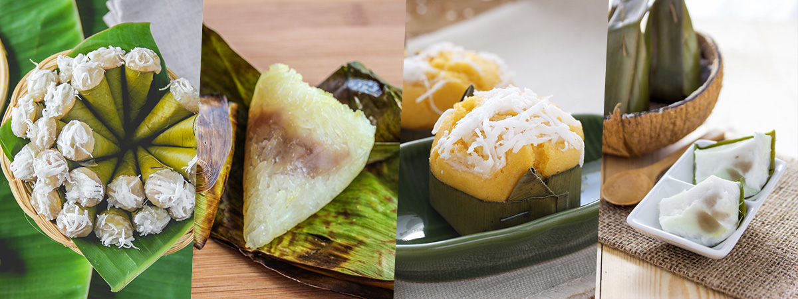

ขนมไทยใบตอง
ร้านเจ๊โต้ง ขนมไทยใบตอง เป็นร้านเล็ก ๆ ที่มีชื่อเสียงในลพบุรี
ร้านเจ๊โต้ง ขนมไทยใบตอง เป็นร้านเล็ก ๆ ที่มีชื่อเสียงในลพบุรี
ร้านโจ๊กที่เปิดมากว่า 40 ปี มีเมนูเด่นคือโจ๊กหมูสับเครื่องในใส่ไข่ ที่มีรสชาติกลมกล่อมและเครื่องแน่น
ร้านก๋วยเตี๋ยวเนื้อที่มีชื่อเสียงในลพบุรี มีเมนูเด็ดคือก๋วยเตี๋ยวเนื้อที่น้ำซุปเข้มข้นและเนื้อนุ่มอร่อย